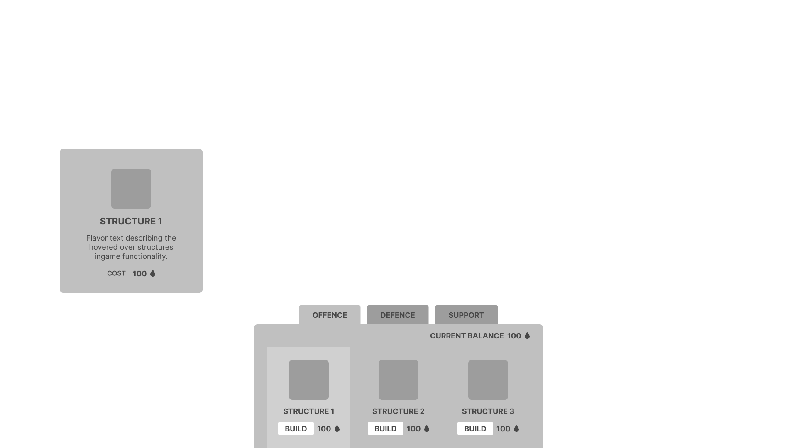

Main role UI/UX Designer,
Secondary role Technical & System Designer
Time
Two weeks pre-production + four weeks production.
Team size
8 person team, consisting of designers and programmers.
VamPower is a Survival-like tower defense with minor roguelike elements revolving around protecting a key point from being destroyed by hordes of enemies.
The gameplay loop focuses around strategizing and becoming stronger during the night by purchasing upgrades and structures,
then fighting off the attackers during the day.
Tailor your playstyle by selecting one out of ten hearts to serve and choose between three different playable characters,
each with their own strengths and weaknesses and a different starting weapon.
I designed and implemented the functionality for all the games UI. I started utilizing the HUD-class for handling everything widget related,
which made structuring the project much simpler.
All the data for the UI widget's come from Data Tables.
I was responsible for implementing certain features and worked closely with the programmers to build the games systems.
I worked a lot with structuring up and handling the games data. As survival-likes often have a lot of stats & numbers needing balancing,
I had as a goal for this project to get all the data from data tables so editing it would be quick and easy.
I had a great experience working with my team and am proud of the game we ended up making.
It's a fun, but be it unbalanced and highly unoptimized, short game!
Use the HUD-class for creating and storing references to the UI instead of the player or controller blueprints.
This greatly helped the projects structure and improved communication with the rest of the team.
Collapse Widgets
Collapse and reuse widgets instead of continuing to create and destroying them.
Set the widgets visibility to collapsed by default and change it when the widget is needed.
RichTextBlocks & RichTextStyle
RichTextStyles helps keep all the text consistent and makes font changes really easy. Use them.
The setup is slower and a bit more tedius but the time saved later when changing fonts is well worth it.
As a team we had two weeks of pre-production where we had to come up with three game concept and make a prototype for each of the concepts.
We spent the first half of the week concepting and roughly planning out the different concepts.
Then we took about two days on each concept to refine it and make a prototype.
I created a health system in blueprints that we reused for all of the prototypes, saving us time to work on other things.
I also made a actor component attack that deal damage in a radius using the interfaces damage function and a tower that fires projectiles.
Details on the actual implementation: (Hidden by default but toggle to show)
This health system uses an Interface and an actor component. The actor component contains all the health related variables and actual logic.
The attack actor component...
The tower...
This games prototype focused mainly on testing how it feels to defend a central point from waves of enemies by building structures.
The prototype features:
Simple enemies that target either the player or the heart.
An enemy spawner that spawns an increasing amount of enemies per wave.
The player can activate structures, two different types, by interacting with them.
Inspiration & Research
I took inspiration from games in the survival-like genre for the UI.
The main ones were Brotato, Soulstone Survivor, the League of Legends gamemode Swarm and a non survival-like Thronefall.
Brotato was used as reference for the layout, particularly the weapon and item shop before a wave.
Soulstone Survivor was used for the overall aesthetics and the HUD layout.
The League of Legends temporary gamemode Swarm was mainly used as inspiration for how to word skills and item descriptions.
Thronefall was used a lot as inspiration. The hold to start night mechanic is one thing and the minimalist UI design is another.
Thronefall was a big inspiration for the games design as a whole actually.
A satisfying feature many games do to make combat feel exciting and impactful is damage numbers and a delayed effect on the healthbar depleting.
HUD Class
I used the HUD-class for
I created a bunch of Event dispatchers in the HUD-class for when certain actions have been triggered in the UI.
An example of this is when an upgrade is purchased from the shop widget.
HUD Widget
What the HUD needs to display differs depending on the games state. During the night the player can buy upgrades or structures, during the day they can't.
Selection Menu
The select menu was made after the other gameplay related menus so I felt confident enough to skip making a layout plan in Figma.
I instead made the layout directly in engine, reusing the widgets I could. The heart select cards are repurposed build structure cards for example.
The main menu part was separated out into it's own menu and level. This made having different maps and restarting a lot easier.
The Heart select card's design worked for a three options but the game required more so I simplified the design.
I accomplished this by moving the additional information into the tooltips.
For debug purposes I added a Quick Play button that skips the selection menus and picks the default options for everything, making getting into the game a lot quicker.
The final result.
Shop Menu
The final result.
I made the card spin animation by decreasing the widgets x scale and the y shear simultaneously.
Was super simple to do but looks convincingly 3D!
Figma Layout compared to final screenshot.
Build Menu
Figma Layout compared to final screenshot.

Cutscene
I've experimented with visual novel style cutscenes before,
with background fading and dialogue typing effects, in my side project so I repurposed and simplified that code.
The cutscene widget takes in an array of images (textures) and an array of string when created.
The two input arrays need to be of the same length in order for the logic to run properly, but that's something we knew would always be the case.
The logic goes through each element, fading to the background image and displaying the string letter by letter. Once the full string has been displayed there's a short delay
before automatically continuing to the next element.
The player can click or press on the keyboard to continue the story quicker. To handle this input I made an invisible button that covers the entire screen.